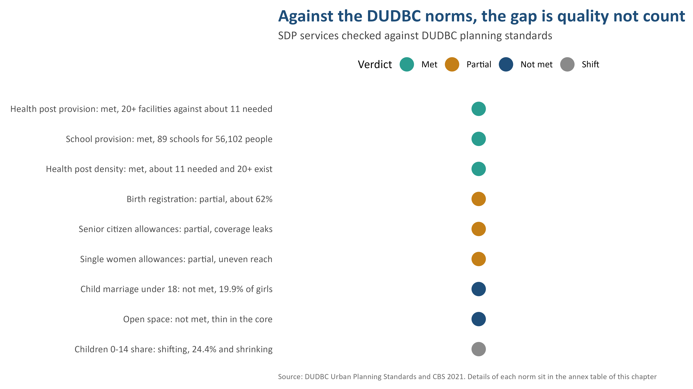

Existing situation

The analytical frame of the SDP: differentiating core, corridor and hill wards so services are targeted, not spread thin.

Concentrated deprivation meets low service density — the gap the plan responds to.
School, health-post and park provision measured against DUDBC Annex A.2 norms (Ch4.3).
Three Baglungs — the town, the corridor, the marginal hills
The Social Development Plan is built on a "Three Baglungs" reading: a denser service-rich core, a thinning middle corridor, and hill wards (7, 9, 11) losing youth and ageing fast. Deprivation is not uniform — it is spatial.
Three Baglungs
Deprivation index

Norm gaps
Baseline. 8 policy streams (P1–P8) govern the SDP; deprivation and GESI gaps drive the programme.